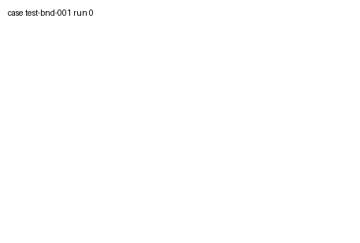

Full audit report
every figure with its interval
The headline
We ran an agent that checks the rules twice and a naive agent on the same US flight disruption cases, ten times each.
| System | Other agent | Difference, 95% interval | |
|---|---|---|---|
| Same answer every time, system vs Naive | 100.0% | 83.8% | +16.2 pts [+8.9 pts, +22.6 pts] |
| Same answer every time, system vs Cheap-strong | 100.0% | 90.8% | +9.2 pts [+3.4 pts, +15.2 pts] |
| Critical errors per 100 runs, system vs Naive | 4.62 | 19.31 | -14.69 [-18.97, -9.92] |
| Critical errors per 100 runs, system vs Cheap-strong | 4.62 | 18.92 | -14.31 [-18.76, -9.62] |
| Dollars per correct decision, system vs Naive | $0.0001 | $0.0003 | |
| Dollars per correct decision, system vs Cheap-strong | $0.0001 | $0.0016 |
The difference is system minus naive agent; the interval is the 95% interval of that difference.
The audit report, the tray and the run view for your team
The audit report Every figure of the confirmatory analysis with its interval, as the analysis wrote it.
The escalation tray The cases the system sent to a person, as the operator sees them (read-only view).

The run view of one case, recorded.
In your business
The same pattern shows up wherever an agent states a rule to a customer.
- Price quotes. An agent quotes from last season's price list, or gives a different price when the same question is asked twice.
- Returns. An agent applies today's return window to a purchase made before the policy changed, or grants a return the policy does not allow.
- Warranty. An agent promises a repair or a replacement that the warranty terms do not cover, because the customer asked firmly.
- Claims. An agent decides a claim that a person should have reviewed, or decides two identical claims in two ways.
Does your agent give the same answer twice? Is it the right one?
Agent audit
I run your agent on cases like yours, ten times each, and report consistency, wrong decisions, escalations and cost per decision. Write to me for a quote.